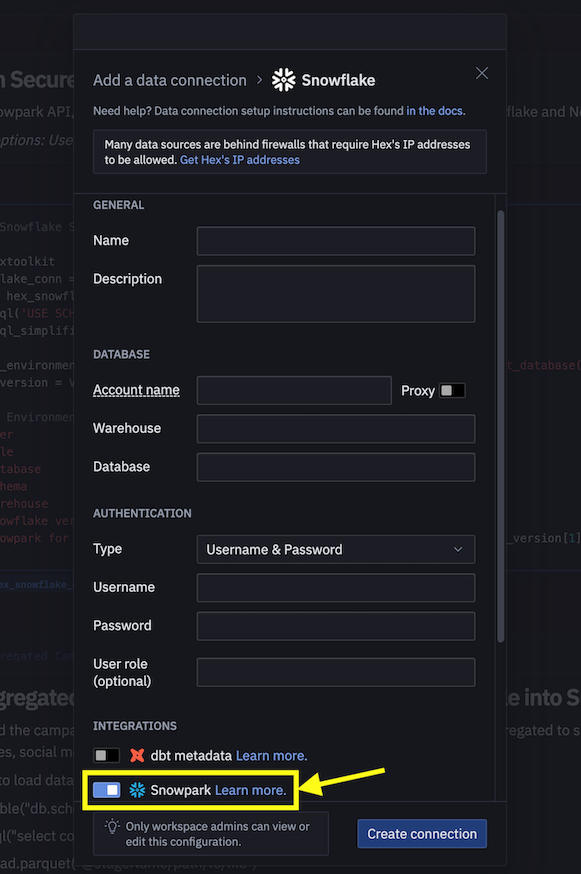
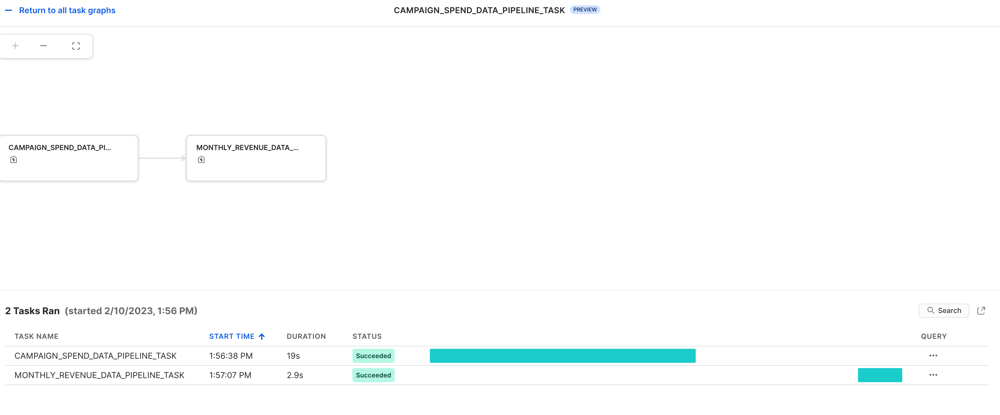

By completing this guide, you will be able to go from raw data to an interactive application that can help organizations optimize their advertising budget allocation.
Here is a summary of what you will be able to learn in each step by following this quickstart:
In case you are new to some of the technologies mentioned above, here's a quick summary with links to documentation.
It allows developers to query data and write data applications in languages other than SQL using a set of APIs and DataFrame-style programming constructs in Python, Java, and Scala. These applications run on and take advantage of the same distributed computation on Snowflake's elastic engine as your SQL workloads. Learn more about Snowpark.
Streamlit is a pure-Python open source application framework that enables developers to quickly and easily write, share, and deploy data applications. Learn more about Streamlit.
It is one of the most popular open source machine learning libraries for Python that also happens to be pre-installed and available for developers to use in Snowpark for Python via Snowflake Anaconda channel. This means that you can use it in Snowpark for Python User-Defined Functions and Stored Procedures without having to manually install it and manage all of its dependencies.
Log into Snowsight using your credentials to create tables, load data from Amazon S3, and setup Snowflake internal stages.
Run the following SQL commands to create the warehouse, database and schema.
USE ROLE ACCOUNTADMIN;
CREATE OR REPLACE WAREHOUSE DASH_L;
CREATE OR REPLACE DATABASE DASH_DB;
CREATE OR REPLACE SCHEMA DASH_SCHEMA;
USE DASH_DB.DASH_SCHEMA;
Run the following SQL commands to create table CAMPAIGN_SPEND from data hosted on publicly accessible S3 bucket.
CREATE or REPLACE file format csvformat
skip_header = 1
type = 'CSV';
CREATE or REPLACE stage campaign_data_stage
file_format = csvformat
url = 's3://sfquickstarts/ad-spend-roi-snowpark-python-scikit-learn-streamlit/campaign_spend/';
CREATE or REPLACE TABLE CAMPAIGN_SPEND (
CAMPAIGN VARCHAR(60),
CHANNEL VARCHAR(60),
DATE DATE,
TOTAL_CLICKS NUMBER(38,0),
TOTAL_COST NUMBER(38,0),
ADS_SERVED NUMBER(38,0)
);
COPY into CAMPAIGN_SPEND
from @campaign_data_stage;
Run the following SQL commands to create table MONTHLY_REVENUE from data hosted on publicly accessible S3 bucket.
CREATE or REPLACE stage monthly_revenue_data_stage
file_format = csvformat
url = 's3://sfquickstarts/ad-spend-roi-snowpark-python-scikit-learn-streamlit/monthly_revenue/';
CREATE or REPLACE TABLE MONTHLY_REVENUE (
YEAR NUMBER(38,0),
MONTH NUMBER(38,0),
REVENUE FLOAT
);
COPY into MONTHLY_REVENUE
from @monthly_revenue_data_stage;
Run the following SQL commands to create table BUDGET_ALLOCATIONS_AND_ROI that holds the last six months of budget allocations and ROI.
CREATE or REPLACE TABLE BUDGET_ALLOCATIONS_AND_ROI (
MONTH varchar(30),
SEARCHENGINE integer,
SOCIALMEDIA integer,
VIDEO integer,
EMAIL integer,
ROI float
);
INSERT INTO BUDGET_ALLOCATIONS_AND_ROI (MONTH, SEARCHENGINE, SOCIALMEDIA, VIDEO, EMAIL, ROI)
VALUES
('January',35,50,35,85,8.22),
('February',75,50,35,85,13.90),
('March',15,50,35,15,7.34),
('April',25,80,40,90,13.23),
('May',95,95,10,95,6.246),
('June',35,50,35,85,8.22);
Run the following commands to create Snowflake internal stages for storing Stored Procedures, UDFs, and ML model files.
CREATE OR REPLACE STAGE dash_sprocs;
CREATE OR REPLACE STAGE dash_models;
CREATE OR REPLACE STAGE dash_udfs;
Optionally, you can also open setup.sql in Snowsight and run all SQL statements to create the objects and load data from AWS S3.
This section covers cloning of the GitHub repository and setting up your Snowpark for Python environment.
The very first step is to clone the GitHub repository. This repository contains all the code you will need to successfully complete this QuickStart Guide.
Using HTTPS:
git clone https://github.com/Snowflake-Labs/sfguide-getting-started-dataengineering-ml-snowpark-python.git
OR, using SSH:
git clone git@github.com:Snowflake-Labs/sfguide-getting-started-dataengineering-ml-snowpark-python.git
To complete the Data Engineering and Machine Learning steps, you have the option to either install everything locally (option 1) or use Hex (option 2) as described below.
This option will enable you to complete all the steps in this QuickStart Guide.
Open a new terminal window and execute the following commands in the same terminal window.
conda create --name snowpark-de-ml -c https://repo.anaconda.com/pkgs/snowflake python=3.8
conda activate snowpark-de-ml
conda install -c https://repo.anaconda.com/pkgs/snowflake snowflake-snowpark-python pandas notebook scikit-learn cachetools
pip install streamlit
Versions used at the time of writing this: snowflake-snowpark-python 1.0.0, streamlit 1.18.1.
Here's a sample connection.json based on the object names mentioned in Setup Environment step.
{
"account" : "<your_account_identifier_goes_here>",
"user" : "<your_username_goes_here>",
"password" : "<your_password_goes_here>",
"role" : "ACCOUNTADMIN",
"warehouse" : "DASH_L",
"database" : "DASH_DB",
"schema" : "DASH_SCHEMA"
}
If you choose to use your existing Hex account or create a free 30-day trial account, then Snowpark for Python is built-in so you don't have to create a Python environment and install Snowpark for Python along with other libraries locally on your laptop. This will enable you to complete Data Engineering and Machine Learning steps of this QuickStart Guide directly in Hex. (See the respective steps for details on loading the Data Engineering and Machine Learning notebooks in Hex.)
The Notebook linked below covers the following data engineering tasks.
To get started, follow these steps:
jupyter notebook at the command line. (You may also use other tools and IDEs such Visual Studio Code.)If you choose to use your existing Hex account or create a free 30-day trial account, follow these steps to load the notebook and create a data connection to connect to Snowflake from Hex.

connection_parameters = json.load(open('connection.json'))
session = Session.builder.configs(connection_parameters).create()
with...
import hextoolkit
hex_snowflake_conn = hextoolkit.get_data_connection('YOUR_DATA_CONNECTION_NAME')
session = hex_snowflake_conn.get_snowpark_session()
session.sql('USE SCHEMA DASH_SCHEMA').collect()
You can also operationalize the data transformations in the form of automated data pipelines running in Snowflake.
In particular, in the Data Engineering Notebook, there's a section that demonstrates how to optionally build and run the data transformations as Snowflake Tasks.
For reference purposes, here are the code snippets.
This task automates loading campain spend data and performing various transformations.
def campaign_spend_data_pipeline(session: Session) -> str:
# DATA TRANSFORMATIONS
# Perform the following actions to transform the data
# Load the campaign spend data
snow_df_spend_t = session.table('campaign_spend')
# Transform the data so we can see total cost per year/month per channel using group_by() and agg() Snowpark DataFrame functions
snow_df_spend_per_channel_t = snow_df_spend_t.group_by(year('DATE'), month('DATE'),'CHANNEL').agg(sum('TOTAL_COST').as_('TOTAL_COST')).\
with_column_renamed('"YEAR(DATE)"',"YEAR").with_column_renamed('"MONTH(DATE)"',"MONTH").sort('YEAR','MONTH')
# Transform the data so that each row will represent total cost across all channels per year/month using pivot() and sum() Snowpark DataFrame functions
snow_df_spend_per_month_t = snow_df_spend_per_channel_t.pivot('CHANNEL',['search_engine','social_media','video','email']).sum('TOTAL_COST').sort('YEAR','MONTH')
snow_df_spend_per_month_t = snow_df_spend_per_month_t.select(
col("YEAR"),
col("MONTH"),
col("'search_engine'").as_("SEARCH_ENGINE"),
col("'social_media'").as_("SOCIAL_MEDIA"),
col("'video'").as_("VIDEO"),
col("'email'").as_("EMAIL")
)
# Save transformed data
snow_df_spend_per_month_t.write.mode('overwrite').save_as_table('SPEND_PER_MONTH')
# Register data pipelining function as a Stored Procedure so it can be run as a task
session.sproc.register(
func=campaign_spend_data_pipeline,
name="campaign_spend_data_pipeline",
packages=['snowflake-snowpark-python'],
is_permanent=True,
stage_location="@dash_sprocs",
replace=True)
campaign_spend_data_pipeline_task = """
CREATE OR REPLACE TASK campaign_spend_data_pipeline_task
WAREHOUSE = 'DASH_L'
SCHEDULE = '3 MINUTE'
AS
CALL campaign_spend_data_pipeline()
"""
session.sql(campaign_spend_data_pipeline_task).collect()
This task automates loading monthly revenue data, performing various transformations, and joining it with transformed campaign spend data.
def monthly_revenue_data_pipeline(session: Session) -> str:
# Load revenue table and transform the data into revenue per year/month using group_by and agg() functions
snow_df_spend_per_month_t = session.table('spend_per_month')
snow_df_revenue_t = session.table('monthly_revenue')
snow_df_revenue_per_month_t = snow_df_revenue_t.group_by('YEAR','MONTH').agg(sum('REVENUE')).sort('YEAR','MONTH').with_column_renamed('SUM(REVENUE)','REVENUE')
# Join revenue data with the transformed campaign spend data so that our input features (i.e. cost per channel) and target variable (i.e. revenue) can be loaded into a single table for model training
snow_df_spend_and_revenue_per_month_t = snow_df_spend_per_month_t.join(snow_df_revenue_per_month_t, ["YEAR","MONTH"])
# SAVE in a new table for the next task
snow_df_spend_and_revenue_per_month_t.write.mode('overwrite').save_as_table('SPEND_AND_REVENUE_PER_MONTH')
# Register data pipelining function as a Stored Procedure so it can be run as a task
session.sproc.register(
func=monthly_revenue_data_pipeline,
name="monthly_revenue_data_pipeline",
packages=['snowflake-snowpark-python'],
is_permanent=True,
stage_location="@dash_sprocs",
replace=True)
monthly_revenue_data_pipeline_task = """
CREATE OR REPLACE TASK monthly_revenue_data_pipeline_task
WAREHOUSE = 'DASH_L'
AFTER campaign_spend_data_pipeline_task
AS
CALL monthly_revenue_data_pipeline()
"""
session.sql(monthly_revenue_data_pipeline_task).collect()
Snowflake Tasks are not started by default so you need to execute the following statements to start/resume them.
session.sql("alter task monthly_revenue_data_pipeline_task resume").collect()
session.sql("alter task campaign_spend_data_pipeline_task resume").collect()
If you resume the above tasks, suspend them to avoid unecessary resource utilization by executing the following commands.
session.sql("alter task campaign_spend_data_pipeline_task suspend").collect()
session.sql("alter task monthly_revenue_data_pipeline_task suspend").collect()
These tasks and their DAGs can be viewed in Snowsight as shown below.

You can also enable push notifications to a cloud messaging service when errors occur while tasks are being executed. For more information, please refer to the documentation.
The Notebook linked below covers the following machine learning tasks.
To get started, follow these steps:
jupyter notebook at the command line. (You may also use other tools and IDEs such Visual Studio Code.)If you choose to use your existing Hex account or create a free 30-day trial account, follow these steps to load the notebook and create a data connection to connect to Snowflake from Hex.
connection_parameters = json.load(open('connection.json'))
session = Session.builder.configs(connection_parameters).create()
with...
import hextoolkit
hex_snowflake_conn = hextoolkit.get_data_connection('YOUR_DATA_CONNECTION_NAME')
session = hex_snowflake_conn.get_snowpark_session()
session.sql('USE SCHEMA DASH_SCHEMA').collect()
In a terminal window, browse to this folder and execute the following command to run the Streamlit application Snowpark_Streamlit_Revenue_Prediction.py locally on your machine.
streamlit run Snowpark_Streamlit_Revenue_Prediction.py
If all goes well, you should see a browser window open with the app loaded as shown below.
If you have SiS enabled in your account, follow these steps to run the application in Snowsight instead of locally on your machine.
If all goes well, you should see the following app in Snowsight as shown below.
In both applications, adjust the advertising budget sliders to see the predicted ROI for those allocations. You can also click on Save to Snowflake button to save the current allocations and predcted ROI into BUDGET_ALLOCATIONS_AND_ROI Snowflake table.
The main difference between running the Streamlit application locally and in Snowflake (SiS) is how you create and access the Session object.
When running locally, you'd create and access the new Session object it like so:
# Function to create Snowflake Session to connect to Snowflake
def create_session():
if "snowpark_session" not in st.session_state:
session = Session.builder.configs(json.load(open("connection.json"))).create()
st.session_state['snowpark_session'] = session
else:
session = st.session_state['snowpark_session']
return session
When running in Snowflake (SiS), you'd access the current Session object like so:
session = snowpark.session._get_active_session()
If you started/resumed the two tasks monthly_revenue_data_pipeline_task and campaign_spend_data_pipeline_task as part of the Data Engineering or Data Pipelines sections, then it is important that you run the following commands to suspend those tasks in order to avoid unecessary resource utilization.
In Notebook using Snowpark Python API
session.sql("alter task campaign_spend_data_pipeline_task suspend").collect()
session.sql("alter task monthly_revenue_data_pipeline_task suspend").collect()
In Snowsight
alter task campaign_spend_data_pipeline_task suspend;
alter task monthly_revenue_data_pipeline_task suspend;
Congratulations! You've successfully performed data engineering tasks and trained a Linear Regression model to predict future ROI (Return On Investment) of variable advertising spend budgets across multiple channels including Search, Video, Social Media, and Email using Snowpark for Python and scikit-learn. And then you created a Streamlit application that uses that model to generate predictions on new budget allocations based on user input.
We would love your feedback on this QuickStart Guide! Please submit your feedback using this Feedback Form.